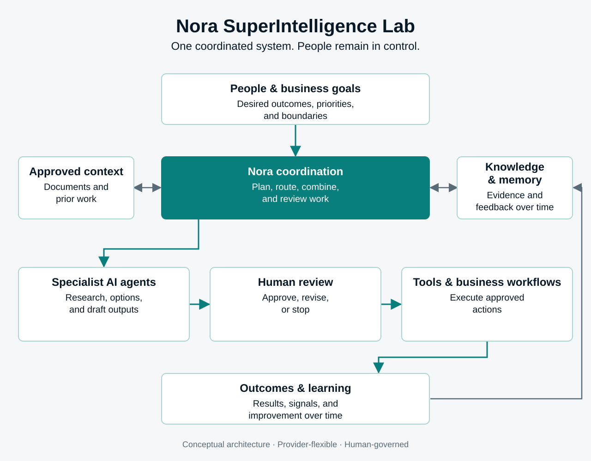
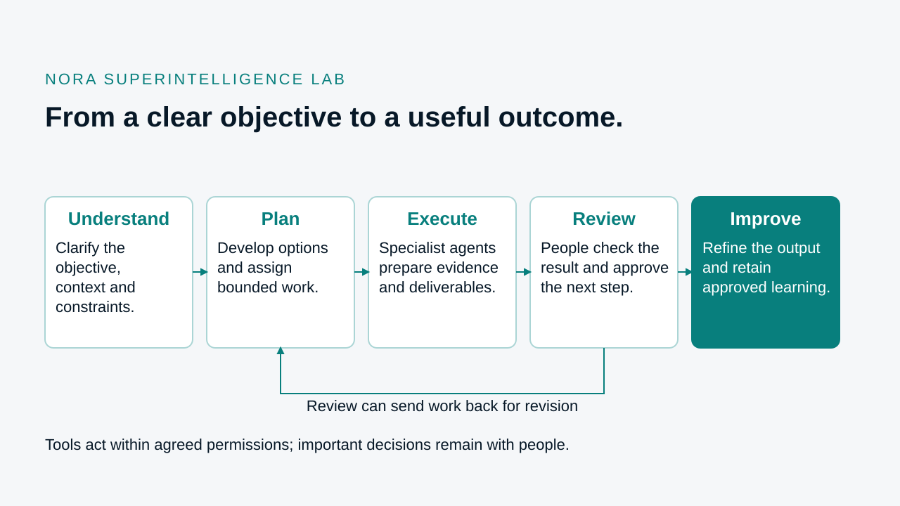

Foundation
Architecture for coordinated, human-led work.
Nora is being built as a modular coordination layer with clear architecture, durable state, and explicit human authority. The lab continues to develop the runtime, workflows, and evidence needed before broader use.
- Human-governed
- Durable
- Auditable
- Provider-flexible
Architecture
A closed loop from intent to improvement.
Every stage has a clear purpose, owner, and evidence trail.


The governing principle
AI coordinates the work. People retain authority and accountability.
Foundation
Designed beyond the demo.
Nora is being built as a modular coordination layer with clear architecture, durable state, and explicit human authority. The lab continues to develop the runtime, workflows, and evidence needed before broader use.
Canonical architecture with explicit ownership and system boundaries.
Python modular runtime with typed domain contracts.
Durable state foundation for operations, journals, outbox events, and receipts.
Versioned schemas for auditable workflow and execution evidence.
Provider-flexible integration so specialist agents and tools can be swapped without rewriting workflows.
Keep reading
See how Nora approaches every workflow.
The operating principles describe how the architecture is used in practice—people decide, edges stay clear, and learning compounds.